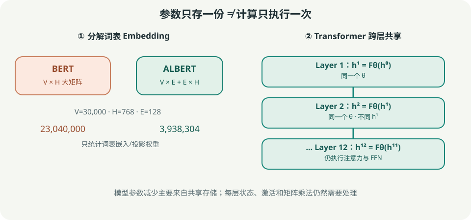

1. 你想节约的究竟是什么
设词表大小 V，隐藏维度 H，Encoder 层数 L，输入长度 T。普通 BERT 的输入词表 embedding 至少需要 V×H 个权重；每一层又各自保存 Q、K、V、FFN 等矩阵，整堆 Transformer 的权重随 L 近似线性增长。扩宽 H，词表 embedding 和深层矩阵都变大；加深 L，层参数和前向计算步骤都增加。
但模型成本不止“参数个数”：它还包括训练优化器状态、梯度、激活与注意力矩阵、设备间通信、每次前向的 FLOPs、批量大小和端到端 latency。ALBERT 主要改善的是参数效率与相关存储/通信，不能仅因为 checkpoint 小，就宣称注意力计算减少同样倍数。
2. 第一处改造：把 V×H 拆成 V×E 与 E×H
ALBERT 引入一个比 Transformer hidden size 小的词嵌入维度 E。先把 token ID 映射到 E 维，再通过共享投影映射到 H 维：[B,T] → [B,T,E] → [B,T,H]。词表项主要需要较低维的类型级表示，而上下文相关变换仍在较高维度 H 进行；这些维度不同，并不影响 Transformer 层输入输出的 H 维契约。
给出一个可检查的教学参数账本：V=30,000、H=768、E=128，传统词表矩阵是 30,000×768=23,040,000 个权重；拆开后是 30,000×128 + 128×768 = 3,938,304，减少 19,101,696 个词表 embedding/投影参数。这个算式只计算指定矩阵，不是 ALBERT 完整模型的实际参数量，未计 position/type embedding、LayerNorm 和任务头等。

4. 第三处改造：SOP 让负例保留主题但改变顺序
BERT 的 NSP 从一个文档取连续的 A、B 作为正例；负例 B 可能来自另一个文档。模型可能仅靠“主题差很远”就区分正负，而未必充分学习句段之间的逻辑连续性。ALBERT 的 Sentence Order Prediction（SOP）保留同一个文档中的相邻片段 A、B，负例直接交换成 B, A。于是 topic 近似不变，是否连贯成为更核心的判断依据。
正例：“屋外开始下雨。” → “小李撑开雨伞。”；负例：“小李撑开雨伞。” → “屋外开始下雨。”。这只是帮助辨别数据构造方式的中文教学示意，不是人工判定顺序互换后的句子一定不可能有合理含义。原论文中的 SOP 针对的是文本片段，每段可以超过一个自然句。
这个简式是原始目标的概念表示；具体实现还需检查各项 loss 的 reduction、样本打包与正负比例。ALBERT 没有“取消 MLM 只做 SOP”，也不是所有现代 Encoder 都应恢复 SOP：后续 RoBERTa 的不同训练配方说明目标效果依赖数据及任务设置。
5. 从原论文 Table 1 看模型参数，别推导不存在的加速比
| 原论文配置 | 层 L | 隐藏 H | 嵌入 E | 参数（Table 1） |
|---|---|---|---|---|
| BERT-base | 12 | 768 | 768 | 108M |
| ALBERT-base | 12 | 768 | 128 | 12M |
| BERT-large | 24 | 1024 | 1024 | 334M |
| ALBERT-large | 24 | 1024 | 128 | 18M |
以上数字取自 原论文 §3.2 Table 1，是特定模型配置下的参数量，和许多模型卡或资料中约 110M、340M 的四舍五入口径可能不同。不能拿 334/18≈18.6 倍参数减少，就声称相同输入的推理吞吐量提高 18.6 倍。
原论文 §4.3 在相同 TPU 数和指定训练配置下，ALBERT-large 相对于 BERT-large 的训练数据吞吐约 1.7×；这涉及通信和架构计算细节，不是通用的 GPU 延迟保证。对于 ALBERT-xxlarge 这样显著加宽 H 的变体，尽管参数仍受共享约束，计算更昂贵，论文同段也报告其吞吐比 BERT-large 更慢。
6. 适合什么场景，不适合用什么宣传语
需要在有限存储和优化器状态预算下训练/部署多层 Encoder，可以考虑嵌入分解与参数共享；但如果瓶颈是长序列的注意力矩阵、激活显存或每 token 的 FLOPs，它们不直接消除 T² 相关项。若要求不同层学习高度差异化的变换，完全共享也可能带来表达能力的权衡，需通过验证集和同预算消融检查。
不要把 checkpoint “更小”、显存“更省”、运算“更快”直接视为同义词。评估时逐项记录参数数、训练显存峰值、训练 tokens/s、下游任务分数与单条 p95 latency；在统一硬件、batch、精度和长度下才可做工程结论。
7. 交互：同样是“省参数”，省在哪里
固定 V=30,000、H=768、E=128、L=12
数值只是权重记账示例，没有运行模型前向或测量实际显存/FLOPs。
传统词表嵌入： V × H = 30,000 × 768 = 23,040,000 个权重。 若每层还使用独立 Transformer 权重，层参数量约随 L 线性增长。 没有计算 position/type embedding、层参数或任务头的总和。
关键结论
- ALBERT 用 V×E 与 E×H 两个矩阵解耦词表嵌入与 Transformer 隐藏维度；默认跨层共享所有 Transformer 参数。
- 相同权重在不同层反复调用；需要的计算步数并未随参数份数同步消失。
- SOP 负例是同文档相邻片段交换顺序，而不是像 BERT NSP 那样随机从其他文档抽取负例。
- 比较具体性能必须同时给出处于哪种模型、硬件、输入长度和数据切分。
原始论文与官方实现
- Lan et al., ALBERT: A Lite BERT for Self-supervised Learning of Language Representations，§3.1–3.2、Table 1、§4.3、§4.5–4.6。
- Google Research, ALBERT 官方实现与模型（具体 checkpoint 配置需逐项核对）。
- Transformers ALBERT 文档（参数共享实现与通用计算成本提醒）。